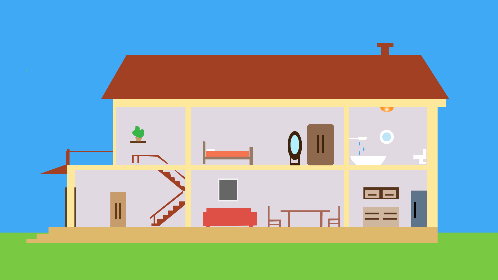

A imagem acima e o grafico feito na disciplina de matematica
Os dados do quadro referen-se ao uso ao longo de 30 dias,por uma única pessoa. O primeiro item é o chuveiro que tem a potência de 7500 watts é utilizado 10 minutos por dia. O consumo mensal é de R$25,875 e de KW/H é 37 KW/H.Já o munitor tem a potência de 20 watts, o tempo de uso são 60 minutos. O consume é de R$0,414 e 0,6 KW/H. Quanto ao ar condicionado,tem a potência de 815 watts, o tempo de uso é de 600 minutos. O consumo mensal é de R$168,705 e 244,5 KW/H. Por último,a geladeira com a potência de 160 watts,o tempo de uso de 2 minutos,O consumo mensal é de R$0,110991 e 0,1599 KW/H.

imagem da casa feita na disciplina de ferramenta de desenho